Modulo 2
Come si costruisce una storia
Dalla struttura narrativa alle storie sociali e alla CAA
cinque
tappe
Personaggio, conflitto, trasformazione
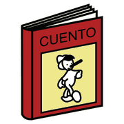
racconto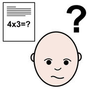
problema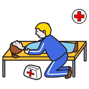
aiutare cambiare
cambiarePrima di tutto, il destinatario: per chi è la storia, cosa capisce, come la riceverà.
Che cos'è la CAA
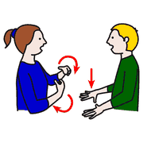
comunicare pittogrammi
pittogrammi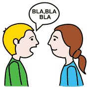
parlareStrategie e strumenti che sostengono o sostituiscono la comunicazione verbale.
le
evidenze
Cosa dice la ricerca
 libri
libri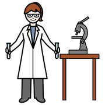
scientifico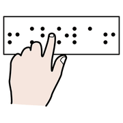
leggereD. Beukelman, P. Mirenda, Augmentative and Alternative Communication, Brookes · Millar, Light, Schlosser, JSLHR 2006 · Sennott, Light, McNaughton, RPSD 2016 · O'Neill et al., JSLHR 2018
Che cos'è una storia sociale
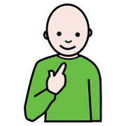
io bibliotecaleggere
bibliotecaleggereUn racconto breve che descrive in anticipo una situazione concreta, dal punto di vista della persona: trasforma l'ignoto in noto. Nasce con Carol Gray (1991), ma serve a chiunque affronti una novità.
La storia in CAA
- Un simbolo per ogni parola chiave
- Frasi brevi, ripetizioni, stessa struttura
- Simboli condivisi, gli stessi che la persona usa ogni giorno
- Dove si può, foto vere dei luoghi e delle persone
bibliotecaOggi vado in biblioteca.
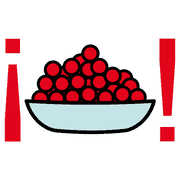
tanti libri
libri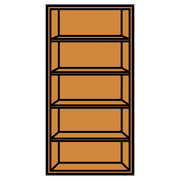
scaffaleIn biblioteca ci sono tanti libri sugli scaffali.
dalla
storia sociale
Un estratto: «Vado in biblioteca»
 domanda
domanda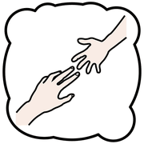
aiuto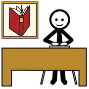
bibliotecariaSe non trovo un libro, chiedo aiuto alla bibliotecaria.
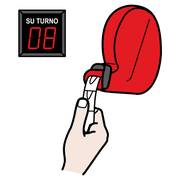
turno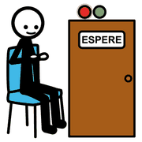
aspettareA volte ci sono altre persone: aspetto il mio turno.
La storia completa è tra i materiali da scaricare.